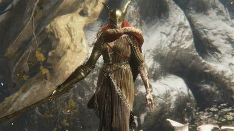
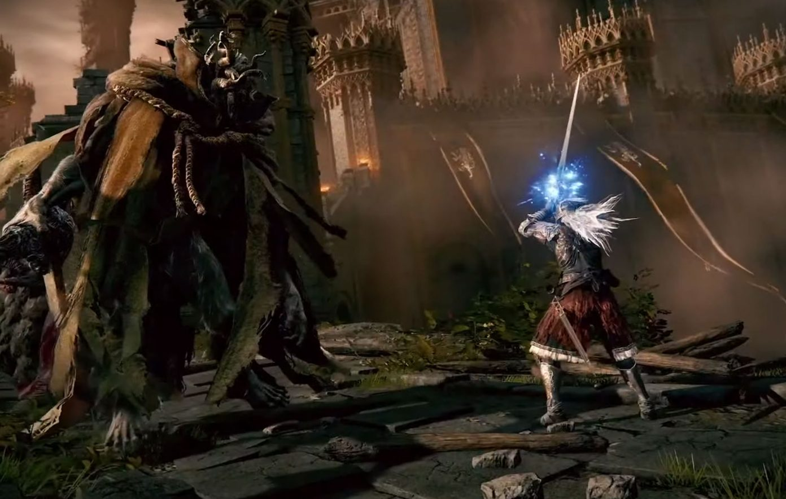

Elden Ring é um jogo de RPG de ação desenvolvido pela FromSoftware, com direção de Hidetaka Miyazaki e construção de mundo fornecida pelo escritor de fantasia George R. R. Martin¹.
O jogo se passa em um mundo aberto chamado "Lands Between", governado pela Rainha Marika, a Eterna². Neste mundo, a fonte do Erdtree, o Elden Ring, foi quebrado e os fragmentos, conhecidos como Great Runes, foram reivindicados pelos descendentes de Marika, todos semideuses². Isso desencadeou uma guerra conhecida como The Shattering e resultou no abandono pelo Greater Will².
Os jogadores controlam um personagem personalizável chamado Tarnished, que está em uma missão para reparar o Elden Ring e se tornar o novo Elden Lord¹. Para fazer isso, eles devem derrotar os descendentes semideuses de Marika e coletar as Great Runes².
O jogo apresenta seis áreas principais que podem ser exploradas livremente pelo jogador usando seu corcel Torrent como principal meio de transporte¹.
Elden Ring é uma jornada épica para restaurar a ordem em um mundo caótico. Com sua jogabilidade envolvente e história rica, é uma aventura que não deve ser perdida.